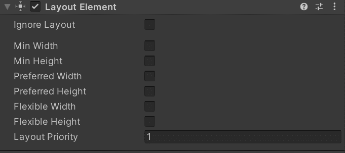
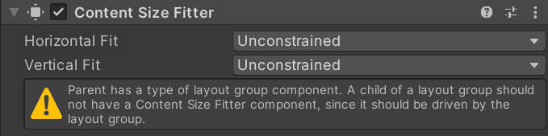

UGUI的布局系统（二）
前言
本文内容涵盖 UGUI 布局系统的组成、工作原理和扩展接口，根据官方文档和实际案例进行讲解。本系列后续文章会针对具体扩展进行实践，一步步带领开发者开发自定义的布局组件，以在此过程中加深对 UGUI 布局系统的理解。
布局系统的组成
布局系统由布局元素和布局控制器组成。
布局元素
布局元素须挂载 RectTransform 组件，因为该组件是布局系统的核心基本单元，它也是布局元素记录自身位置、大小、锚点模式、轴心、旋转和缩放等基础信息的集合体。布局元素不能也不应主动去控制自身位置、大小等影响整体布局的参数，而只是提供必要的信息，如以下信息：
| 属性 | 说明 |
|---|---|
| Ignore Layout | 布局系统是否忽略该布局元素 |
| Minimum width | 宽度最小值 |
| Minimum height | 高度最小值 |
| Preferred width | 宽度优选值 |
| Preferred height | 高度优选值 |
| Flexible width | 宽度灵活值，[0,1] |
| Flexible height | 高度灵活值，[0,1] |
| Layout Priority | 布局属性优先级，当存在一个以上的提供布局属性的组件时，将根据优先级采纳，对于同优先级则默认采纳最大值。 |

这是 LayoutElement 组件提供的开放属性，显式挂载该组件或 ILayoutElement 类型组件的对象被视为布局元素，这些属性代表着布局控制器所需要的信息。
对于 Minimum、Preferred、Flexible，我们需要进一步说明。布局系统给布局元素分配大小会有一个优先级，首先分配 Minimum，当管理范围中的所有元素分配完该值后，若有额外空间，则分配 Preferred，同样当所有元素分配完后依旧还有额外空间，才分配 Flexible。所以优先级是 Minimum > Preferred > Flexible。Preferred 被认为是该元素最合适的值，但是如果不足以分配到这个值，那也可以退而求其次，但是 Minimum 是最低限度，Flexible 通常是可选的，但对于空间分配要求更多的元素，它往往是必要的。当存在多个元素处于相同布局控制域中，且都要求 Flexible，那就会根据该值的大小来划分各自的额外空间。
布局控制器
布局控制器的作用是控制布局元素，子布局元素可以是布局控制器，也可以是它的控制域中的其它非布局控制器的布局元素。这里能看到 UGUI 布局系统的巧妙设计，通过组合模式使得布局控制器可以嵌套组合使用，从而提供更灵活强大的布局效果。布局控制器又划分为两类，一类是用于控制自身的组件，另一类是控制子布局元素的组件。前者包括 Content Size Fitter、Aspect Ratio Fitter 等组件，后者包括 Horizontal Layout Group、Vertical Layout Group 等组件，在本系列文章中我们分别将两者称为适配器和布局组。
适配器明确要求自身排除在其它布局控制域之外，所以它的直接父元素中不能挂载布局组组件，否则就会提示警告，这种使用是不合法的，可能导致无法预料的结果。例如父元素挂载 Horizontal Layout Group 组件，而子元素挂载 Content Size Fitter 组件，这就导致控制域重叠而产生冲突。

布局组要求所有直接子布局元素提供相关信息参与布局空间分配，子布局元素可以提供期望的分配，但布局组无法保证一定能满足期望。布局组可以嵌套，但不能在同一个对象上重复挂载，要使得布局系统能够正常工作，开发者应该明确当前布局体系是否存在控制域冲突，这是深入了解布局系统所必须掌握的能力，也是正确使用布局系统的前提。
适配器控制的是所挂载元素的属性，所以适配器所挂载的元素不能成为布局元素，因为如果成为布局元素，那么就意味着它可以被布局组所控制，那就会导致控制域冲突，而布局组之所以能成为布局元素，是因为布局组不控制所挂载元素的属性而是控制子布局元素的属性。
布局系统的工作原理
布局系统将按照下列顺序完成一次布局工作：
布局系统”自下而上“计算布局元素宽度的
Minimum、Preferred、Flexible值，所以这个过程中父布局元素可以参考子布局元素，计算出自身所需要的宽度。布局系统中的布局控制器将”自上而下“设置控制域中布局元素在水平方向上的属性，父元素如果有适配器则会先对自身属性进行设置，然后再对布局组控制域中的子元素进行设置。
布局系统”自下而上“计算布局元素高度的
Minimum、Preferred、Flexible值，所以这个过程中父布局元素可以参考子布局元素，计算出自身所需要的高度。布局系统中的布局控制器将”自上而下“设置控制域中布局元素在垂直方向上的属性，父元素如果有适配器则会先对自身属性进行设置，然后再对布局组控制域中的子元素进行设置。
值得注意的是，宽度优先于高度进行计算，水平优先于垂直进行设置，所以高度可以参考宽度，垂直可以参考水平。负责属性设置的控制器也分先后，在属性设置过程中，适配器先于布局组进行属性设置。
布局系统的扩展接口
ILayoutElement
布局元素接口，实现该接口则会被布局系统视为布局元素。
ILayoutController
布局控制器接口，实现该接口则具备设置布局元素属性的能力。
ILayoutGroup
布局组接口，继承自布局控制器接口，实现该接口则具备设置子布局元素属性的能力，但不能也不应设置自身的属性。
ILayoutSelfController
适配器接口，继承自布局控制器接口，实现该接口则具备设置自身属性的能力，但不能也不应控制子布局元素的属性。
ILayoutIgnorer
忽略布局接口，实现该接口则会被布局系统所忽略，不参与布局。
布局系统的执行周期
flowchart TD
A[触发源<br>子元素尺寸/内容变化] -->|调用| B[SetLayoutDirty]
B --> C{CanvasUpdateRegistry<br>IsRebuildingLayout?<br>当前是否正在重建布局？}
C -->|是| D[启动协程<br>延迟到下一帧执行]
D --> D1[协程回调中调用<br>MarkLayoutForRebuild]
D1 --> F
C -->|否| E[立即调用<br>MarkLayoutForRebuild]
E --> F
F[注册到 CanvasUpdateRegistry]
F --> G[等待 Canvas.willRenderCanvases<br>渲染前回调]
G --> H[LayoutRebuilder.PerformLayoutRebuild<br>遍历待重建的根节点]
H --> H1[设置 IsRebuildingLayout = true]
H1 --> H2[进入水平和垂直处理]
subgraph Pass1 [水平和垂直处理]
direction TB
I[步骤一：水平计算<br>CalculateLayoutInputHorizontal] --> I1[递归：自下而上<br>从最深层叶子节点开始]
I1 --> I2[子节点向父节点汇报<br>Min/Pref/Flex 宽度]
I2 --> I3[父节点汇总所有子节点数据<br>计算出自身宽度需求]
I3 -->|逐级向上，直到根节点| I4[所有节点的水平需求计算完毕]
I4 --> J[步骤二：水平应用<br>SetLayoutHorizontal]
J --> J1[递归：自上而下<br>从根节点开始]
J1 --> J2[父节点向子节点分配<br>X 坐标和宽度]
J2 --> J3{当前节点存在<br>子节点？}
J3 -->|是| J1
J3 -->|否| J4[当前分支叶子节点<br>水平应用完成]
J4 -->|逐级返回| J5[所有节点的<br>水平应用完毕]
J5 -->J6[进入垂直处理]
end
subgraph Pass1 [水平和垂直处理]
direction TB
K[步骤三：垂直计算<br>CalculateLayoutInputVertical] --> K1[递归：自下而上<br>从最深层叶子节点开始]
K1 --> K2[子节点向父节点汇报<br>Min/Pref/Flex 高度<br>⚠️ 此时宽度已确定]
K2 --> K3[父节点汇总所有子节点数据<br>计算出自身高度需求]
K3 -->|逐级向上，直到根节点| K4[所有节点的垂直需求计算完毕]
K4 --> L[步骤四：垂直应用<br>SetLayoutVertical]
L --> L1[递归：自上而下<br>从根节点开始]
L1 --> L2[父节点向子节点分配<br>Y 坐标和高度]
L2 --> L3{当前节点存在<br>子节点？}
L3 -->|是| L1
L3 -->|否| L4[当前分支叶子节点<br>垂直应用完成]
L4 -->|逐级返回| L5[所有节点的<br>垂直应用完毕]
end
L5 --> M[所有 RectTransform 属性更新完毕]
M --> N[设置 IsRebuildingLayout = false]
N --> O[CanvasRenderer 更新网格]
O --> P[GPU 渲染到屏幕]
布局重建触发回调
- OnEnable
- OnDisable
- OnRectTransformDimensionsChange
- OnValidate (only needed in the editor, not at runtime)
- OnDidApplyAnimationProperties
总结
UGUI 布局系统由布局元素和布局控制器组成，能理解布局元素和布局控制器以及正确分析当前布局体系的控制域是正确使用布局系统的前提，当布局效果不如预期时应优先排查是否存在控制域冲突。布局系统基于 “宽度优先于高度进行计算，水平优先于垂直进行设置，适配器先于布局组，适配器不能作为布局元素，布局组可以作为布局元素“ 的原则进行运作，提供了 ILayoutElement、ILayoutController、ILayoutGroup、ILayoutSelfController、ILayILayoutIgnoreroutElement 等扩展接口。